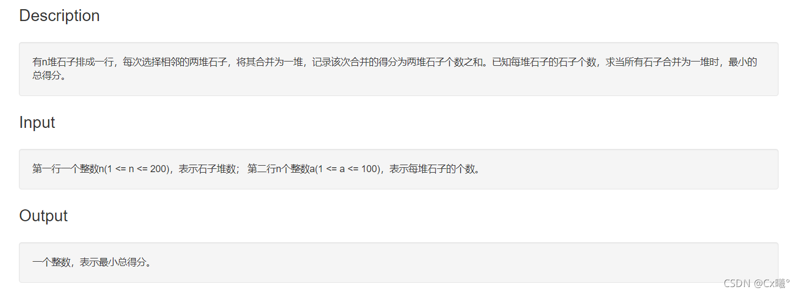
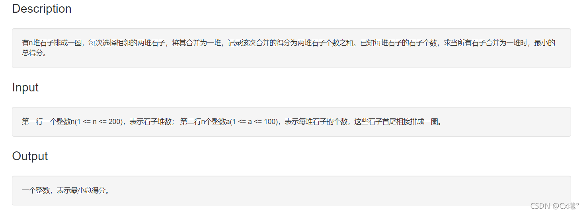
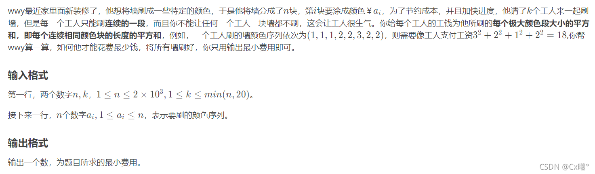

可以说是第一部分自学的内容吧，一开始是因为在oj上碰到了类似的题，新生赛（不愿再回忆。。。）也有一个题用到了这一部分知识，来看看吧。（这一篇有很多想写的，希望不会鸽掉）
例题： 1045 石子合并1 1048 石子合并2 1178 能量项链 U187635 刷墙（easy）
区间DP：区间类动态规划是线性动态规划的扩展，它在分阶段地划分问题时，与阶段中元素出现的顺序和由前一阶段的哪些元素合并而来有很大的关系。（来自区间 DP - OI Wiki (oi-wiki.org) ）通俗点说，就是在区间上进行动态规划 ，求解一段小区间内的最优规划，通过合并 各个小区间的最优解，得到整个区间上的最优解。
刚开始学的时候很懵，多看几遍，把每个量的含义和作用搞清楚，这样有利于掌握知识点，也有利于自己写代码哦~
链状区间DP
结合一个板子题解释：1045 石子合并1

我们求解石子序列合并的最小值，将其分成若干小区间，分别求解小区间的最优解。
AC代码（拆开的 :P）：
1 2 3 4 5 6 7 8 9 10 11 12 13 14 15 16 17 18 19 20 21 22 23 24 #include <iostream> #include <cstdio> #include <algorithm> #include <stack> #include <vector> #include <map> #include <queue> #include <cstring> #include <cmath> #include <set> #include <iterator> using namespace std;typedef long long ll;#define ios ios::sync_with_stdio(false);cin.tie(0);cout.tie(0); #define INF 0x3f3f3f3f const int mod=1e9 +7 ;const int N=500 ;int a[N],dif[N];ll f[N][N]; int n;
定义部分，f二维数组是DP数组，第一维指起点，第二维为终点，即f数组表示在区间起点->终点上石子合并的最优解。dif数组为前缀和数组，因为我们要求区间最优解，少不了求某一个区间内石子的和，用前缀和无疑是最方便的解法。
1 2 3 4 5 6 7 8 9 10 11 12 13 14 15 16 17 18 19 20 21 22 23 24 25 26 int main () cin>>n; memset (dif,0 ,sizeof (dif)); memset (f,INF,sizeof (f)); for (int i=1 ;i<=n;i++) { cin>>a[i]; dif[i]=dif[i-1 ]+a[i]; f[i][i]=0 ; } for (int len=1 ;len<=n;len++) { for (int j=1 ;j+len-1 <=n;j++) { int ends=j+len-1 ; for (int i=j;i<ends;i++) { f[j][ends]=min (f[j][ends],f[j][i]+f[i+1 ][ends]+dif[ends]-dif[j-1 ]); } } } cout<<f[1 ][n]<<'\n' ; return 0 ; }
主函数部分，解释在注释中。需要特别解释的是我们的状态转移方程：某一小区间的最优解=min（原来值，小区间中分割点i左侧区间最优解+i右侧区间最优解+小区间连续石子序列和）。这样我们从编号为1的石子开始不断更新小区间最优解，那么我们最后的答案就是从1到n的最优解，即 f[1][n] ，输出即可。
再解释一下各个参量的范围：len小区间长度，范围 [1,n]；j各个小区间起点，可以从1开始，结束为n+1-len（因为每个区间都有长度，j肯定不能取到n呀，至于为什么加1，自己仔细看看）；i分割点，可以是起点或终点，也可以是小区间内更小区间的起点或终点，范围是某一区间的起点到终点即 [j,ends] （可能这样说有点怪，但是确实这样。。。）
初始化问题：前缀和数组初始化为0即可，f数组根据所求为最大值还是最小值初始化，在这个题中所求为最小值，那么初始化为最大值。
环状区间DP
思考：以上是在数列中使用区间DP，可是如果我们要合并的是一个环呢？
主要的思想还是把环转换成链来处理，把它转换成我们已经解决的问题来考虑。但是环转化为链有以下两种方式：1、直接断开，枚举各个断点，但由于要枚举n次，所需时间复杂度较大，为O(n^4)；2、将链延长成2n长度，那么第i项与第n+i项相同，在这条链中动态规划求最优解，这样所需时间复杂度为O(n^3)。为尽可能减小时间复杂度，我们在这里采用第二种间断方式。（第一种也可以试一下，就是会很慢就是啦）
结合板子题解释： 1048 石子合并2

AC代码：
1 2 3 4 5 6 7 8 9 10 11 12 13 14 15 16 17 18 19 20 21 22 23 24 25 26 #include <iostream> #include <cstdio> #include <algorithm> #include <stack> #include <vector> #include <map> #include <queue> #include <cstring> #include <cmath> #include <set> #include <iterator> using namespace std;typedef long long ll;#define ios ios::sync_with_stdio(false);cin.tie(0);cout.tie(0); #define INF 0x3f3f3f3f const int mod=1e9 +7 ;const int N=500 ;int a[N];ll f[N][N]; ll dif[N]; ll ans=INF; int n;
变量定义部分，f二维数组为DP数组，a数组为输入数组，注意a数组至少要开两倍数据范围大小 （不然会WA），因为我们按照第二种间断方式，会把输入数组转化为两倍，即：1 2 3 4 -> 1 2 3 4 1 2 3 4；dif为前缀和数组，ans变量表示最后最大值结果。
1 2 3 4 5 6 7 8 9 10 11 12 13 14 15 16 17 18 19 20 21 22 23 24 25 26 27 28 29 30 31 32 33 34 int main () cin>>n; for (int i=1 ;i<=n;i++) { cin>>a[i]; a[i+n]=a[i]; dif[i]=dif[i-1 ]+a[i]; } for (int i=1 ;i<=n*2 ;i++) { dif[i]=dif[i-1 ]+a[i]; f[i][i]=0 ; } for (int len=1 ;len<=n;len++) { for (int i=1 ;i<=2 *n-1 ;i++) { int j=len+i-1 ; f[i][j]=INF; for (int k=i;k<=j;k++) { f[i][j]=min (f[i][j],f[i][k]+f[k+1 ][j]+dif[j]-dif[i-1 ]); } } } for (int i=1 ;i<=n;i++) { ans=min (ans,f[i][i+n-1 ]); } cout<<ans<<'\n' ; return 0 ; }
求解过程与链状基本相同，唯一需要注意的是在最后得到答案ans时，因为是环状，起点是1~n中任意一个，终点为起点+n-1，故可见代码最后一段for循环即遍历从1~n最优解，得到后赋值给ans，输出即可。
搞明白区间DP大概内容了嘛，下面看一个环状DP的具体应用：1178 能量项链
需要注意应用时不同在于理解题意，根据题意修改某些细节，但是大体的解题方向是不变的。
直接放AC代码：
1 2 3 4 5 6 7 8 9 10 11 12 13 14 15 16 17 18 19 20 21 22 23 24 25 26 27 28 29 30 31 32 33 34 35 36 37 38 39 40 41 42 43 44 45 46 47 48 49 50 51 52 53 54 55 #include <iostream> #include <cstdio> #include <algorithm> #include <stack> #include <vector> #include <map> #include <queue> #include <cstring> #include <cmath> #include <set> #include <iterator> using namespace std;typedef long long ll;#define ios ios::sync_with_stdio(false);cin.tie(0);cout.tie(0); #define INF 0x3f3f3f3f const int mod=1e9 +7 ;const int N=300 ;ll a[N],f[N][N]; ll ans; int main () int n; cin>>n; memset (f,0 ,sizeof (f)); for (int i=1 ;i<=n;i++) { cin>>a[i]; a[i+n]=a[i]; } for (int len=2 ;len<=n;len++) { for (int i=1 ;i+len<=2 *n+1 ;i++) { int j=i+len-1 ; for (int k=i;k<j;k++) { f[i][j]=max (f[i][j],f[i][k]+f[k+1 ][j]+a[i]*a[k+1 ]*a[j+1 ]); } } } ans=0 ; for (int i=1 ;i<=n;i++) { ans=max (ans,f[i][i+n-1 ]); } cout<<ans<<'\n' ; return 0 ; }
与前面不同的是更新小区间最优解时，原来是用前缀和的位置改成题中求解能量释放量的乘积了，为什么在这里用乘法呢？这需要我们认真读题，也需要我们多做题去锻炼类似的思考方式。。
下面就是我打的稀碎的新生赛的一个区间DP的题，当时我还没学习这一部分，现在算是对这个题迟到的补题吧。
U187635 刷墙（easy）
注意读题，很多题确实是因为题目读不明白而出大问题。很显然，这里刷墙所需的工钱是一个解题的小障碍。区间DP的应用中需根据题意确定我们需更新小区间的含义。

下面AC代码：
1 2 3 4 5 6 7 8 9 10 11 12 13 14 15 16 17 18 19 20 21 22 23 24 25 #include <iostream> #include <cstdio> #include <algorithm> #include <stack> #include <vector> #include <map> #include <queue> #include <cstring> #include <cmath> #include <set> #include <iterator> using namespace std;typedef long long ll;#define ios ios::sync_with_stdio(false);cin.tie(0);cout.tie(0); #define INF 0x3f3f3f3f const int mod=1e9 +7 ;const int N=2005 ;int n,k;int a[N],c[N][N];int len;ll f[N][30 ];
定义变量部分，有几点需要注意：开的f二维数组，第一维表示刷的墙数（注意是从第一面开始），第二维表示工人数，f[i][j]表示j个工人刷了[1,i]面墙所用的最低费用。工人数根据题目所给数据范围，是一个小于等于20的正整数，所以第二维开到30足够了，，（尽量减少占用空间）；len用于计数，计算相连同色墙的块数。
1 2 3 4 5 6 7 8 9 10 11 12 13 14 15 16 17 18 19 20 21 22 23 24 25 26 27 28 29 30 31 32 33 34 35 36 37 38 39 40 41 42 43 44 45 46 47 48 49 50 51 int main () cin>>n>>k; for (int i=1 ;i<=n;i++) { for (int j=1 ;j<=k;j++) { f[i][j]=INF; } } for (int i=1 ;i<=n;i++) { cin>>a[i]; } for (int i=1 ;i<=n;i++) { c[i][i]=1 ; } for (int i=1 ;i<=n;i++) { len=1 ; for (int j=i+1 ;j<=n;j++) { if (a[j]==a[j-1 ]) { c[i][j]=c[i][j-1 ]+len*2 +1 ; len++; } else { c[i][j]=c[i][j-1 ]+1 ; len=1 ; } } } for (int i=1 ;i<=n;i++) f[i][1 ]=c[1 ][i]; for (int i=1 ;i<=n;i++) { for (int j=2 ;j<=min (i,k);j++) { for (int l=j-1 ;l<i;l++) { f[i][j]=min (f[i][j],f[l][j-1 ]+c[l+1 ][i]); } } } cout<<f[n][k]<<'\n' ; return 0 ; }
主函数部分：每一步的解释都在注释中了，有两个地方需要另外解释：注释中（1）：这个地方用的方法很巧妙，我们计算刷墙的费用，如果有连续颜色相同的墙，我们怎样计算费用呢，已知连续相同颜色墙的费用这样计算：（i为连续颜色相同数）i=1，cost=1；i=2，cost=4；i=3，cost=9…我们容易发现这几个数之间的关系，方便我们一边更新i，一边更新cost，2,4,9,16…这些数之间的差值为等差数列！这样用len计算的部分就容易理解了。注释中（2）：l为什么小于i首先l是用于计墙数的变量，再者我们要更新的是前j-1人最优解+最后一人工钱，需保证最后一人至少有一面墙能刷所以不取“=”。
:P
os：怎么说呢，这个题我感觉会区间DP也不一定能做出来。。。（也可能因为我太菜了）
思考：现在的问题是碰到应用状态方程的某些细节就不知道怎么处理了，还是要多加练习呀
如有错误请赐教
Orz
If you like this blog or find it useful for you, you are welcome to comment on it. You are also welcome to share this blog, so that more people can participate in it. If the images used in the blog infringe your copyright, please contact the author to delete them. Thank you !